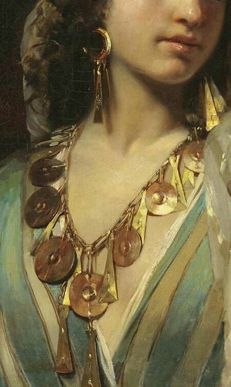
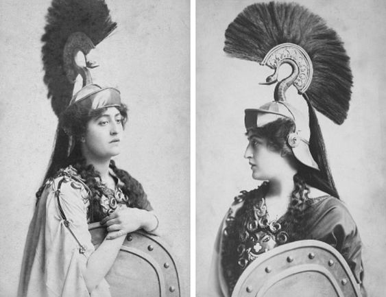
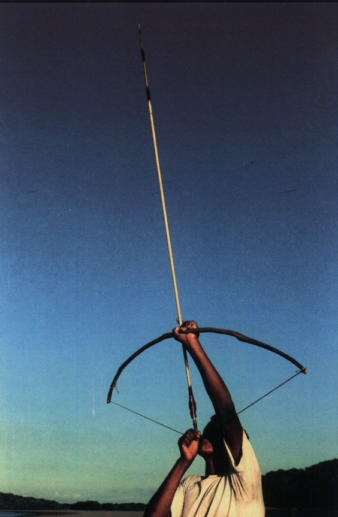
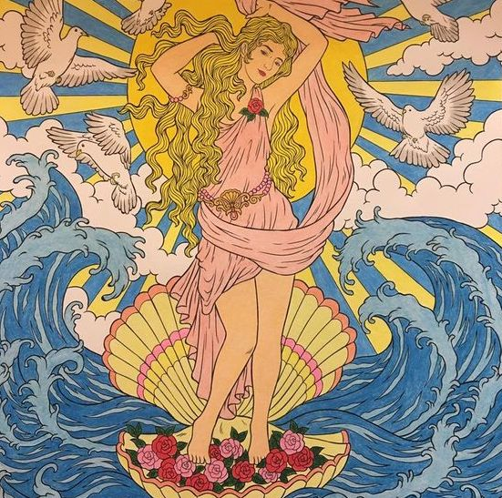

The celestial feuds and interactions between gods on Mount Olympus have fascinated historians, people who study literature, and philosophers alike. Each deity embodies the unique qualities that shape the cosmos, providing answers to early ponderers. Let's delve into the worlds of these ancient gods and goddesses, uncovering the myths that have fascinated humanity for millennia.

The most prominent gods are:
Zeus, King of the Gods
At the pinnacle of Mount Olympus stands Zeus, the thunderbolt-wielding king of the gods. His authority extends over the heavens and the Earth, his presence commanding both fear and respect. His dad Cronus ate him and his siblings when they were fresh out of the womb. Zeus was the one who got everyone out so he proudly declared himself as the king of the gods as a child. He's also remembered as the enforcer of divine order. However, his romantic flings here and there with mortal women often create chaos. He's seen being depicted as both a charismatic ruler and unfaithful lover.
I think the Greeks depicted him this way to set a model for themselves. Zeus is like what everyone (man, at least) aspires to become. He's a babe magnet and also a really great ruler. He also spins chaos about with all his romantic relationships, an ode to masculinity and how power corrupts.
Hera, Queen of Heaven
Hera exudes regality. She's both the sister and wife of Zeus, their union symbolizing the divine balance of power; chaos and order, masculine and feminine. She's the protector of marriage and family, ironically, as Zeus always cheats on her with other women. I think this is how women in Ancient Greece were portrayed. Perhaps they let their husbands cheat on them, acting out in jealous fits later on. They had no power. I think Hera, the queen of the heavens, embodies that. She's known for hating on Hercules and all of Zeus' other illegitimate offspring.
Athena, Goddess of Wisdom
The Grey Goddess, the helper of Odysseus and famous warrior-muse, was a feminine deity. I think this was because the Greeks thought war had feminine qualities, as the detail and precision of war was something that warriors and kings relished in. That's probably how they saw women. She is also the goddess of wisdom, demonstrating how the early Greeks believed that warfare and knowledge were governed under the same body. They must have thought them similar to some extent, which is fascinating to say the least!
Unlike her impulsive half-brother Ares, she represents the discipline and tactics of warfare rather than the glory and bloodshed. She was also born from Zeus' head, which is why she's so smart. The Greeks weren't stupid, this means - they knew knowledge came from our heads and not our hearts!

Apollo, God of Light and Music
He's known for riding his golden chariot by day, lapping it around the Earth and casting it into nightfall by night. He was associated with light, music and prophecy. His mastery of the lyre and the arts reflects the balance between logic and creativity. His pursuit of the nymphe Daphne demonstrates the enduring struggle between desire and fate, being the subject of plays from ancient times to the modern era.
He's the attractive son of Zeus and Leto - he's the personification of music and light, so why wouldn't he be? His oracle at Delphi is a conduit for getting glimpses of the future. His famed oracle is the subject of lots of Greek poetry. Oh, also, he's the god of poetry.
Aphrodite, the Goddess of Love and Beauty
Early Greek poets have claimed Aphrodite was born from no set of parents, being washed up from seafoam long before the age of humanity. This is a beautiful metaphor that displays how love has ached and caused fervor even before humans existed. This shows how the poets described love as an everlasting, beautiful thing. She's married to Hephaestus, the god of iron and flames, who isn't the most blessed person in the world when it comes to looks (she was married off to him as a trick).
She has the hots for Ares, which is another beautiful metaphor for the passion and rage of war. Love itself desires warfare, marking the desire for adventure and excitement in our hearts. Her union with Hephaestus shows how our stamped-out longing for violence has to be kept in check for us to function in society.